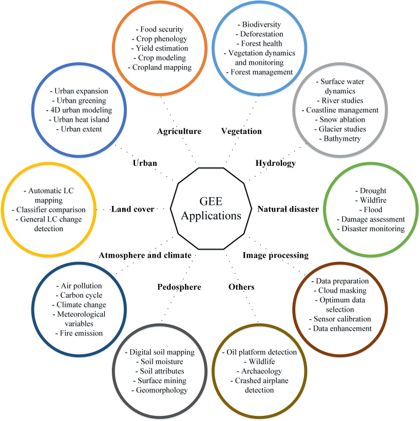

Overview
- Summary
- Application
- Reflection
5.1 Summary
This section provides a quick general overview of the lecture and the key details and points about Google Earth Engine (GEE), mostly provided in bullet points to refine the most important things to remember when understanding what GEE is and how it is used.
5.1.1 What is GEE?
- A platform which provides a catalog of satellite imagery and geospatial data for analysis.
- Provides the ability to use large datasets at a very fast pace, applying self-written code.
- Uses JavaScript.
- Code runs on both the client and server side.
5.1.2 Why is it used?
- Complete image does not need to be loaded many times when looping.
- Public datasets, openly available use.
5.1.3 Usage details
- Image scale = pixel resolution, set by the output
- All data converted automatically to the Mercator projection
- Object = vector, raster, feature, string, number - belong to a class
- Image = raster（Has bands）
- Geometry = point, line, polygon - no attributes
- Feature = geometry with attributes
Figure1:1Google Earth Engine Code Editor interface (Source: Google Earth Engine)
5.1.4 What can be done with GEE?
Spatial operations such as joins, zonal statistics ( reduceRegion() ), filtering
Reducing imagery by region or neighbourhood
Machine learning, classification, deep learning
Imagery is accessible from multiple sensors
Linear regression, multivariate multiple linear regression
Joins - spatial joins, intersections
5.2 Application
The applications for Google Earth Engine are vast. earth Engine really changes things by making remote sensing analyses faster and more accessible (you don’t have to download huge amounts of data and then spend a lot of time working with giant raster files). The diagram below summarises the range of applications for Earth Engine:

Due to the fact that no images were saved during the classroom exercise, I will use the literature to make an example for the application of the GEE platform: a specific example of the GEE application is its use in identifying land categories and detecting changes in EVI over the years through the indicators of changes in vegetation density and land cover. Advance EVI through the GEE platform is evident from the time series analysis that the Dasi industrial area shows significant land cover changes, mainly due to urbanisation and land reclamation activities (Sidhu, Pebesma, and Câmara 2018).
Advantages and disadvantages of GEE(Amani et al. 2020b)：
5.3 Reflection
This week we delved into Google Earth Engine, which has greatly accelerated the field of remote sensing. I have to say that it’s really a lot easier and more convenient to start using Earth Engine without having to debug time and time again for strange problems, but at the same time I found the process of having to manually download and process the images in SNAP or QGIS to be very cumbersome and time-consuming, as well as the fact that when uploading the shape range files for the study area there can only be one shape file in the zip file, which took me A lot of time was spent on solving this small but easily stuck problem. Overall though, processing raster images with the GEE platform really went much smoother.
Google Earth Engine Code Editor interface (Source: Google Earth Engine)↩︎